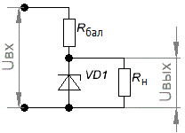

Расчет стабилизаторов напряжения

Рис. 1 – Принципиальная схема параметрического стабилизатора
Для расчёта стабилизатора, как правило, используются только два параметра:
- Uст - напряжение стабилизации,
- Iст - ток стабилизации,
при условии что ток нагрузки равен или меньше тока стабилизации.
Для простого расчета стабилизатора на примере будем использовать следующие параметры:
- Входное напряжение 10 В.
- Выходное напряжение 6,8 В.
- Ток нагрузки 10 мА.
Из справочника выбираем близкий по параметрам стабилитрон КС168А со следующими параметрами
| Uст, В | Iст, мА | Рmax, мВт | Uст min, B | Uст max, B | Iст min, мА | Iст max, мА | Тк max, °С |
|---|---|---|---|---|---|---|---|
| 6,8 | 10 | 300 | 6,12 | 7,48 | 3 | 45 | 125 |
Порядок расчета:
- Вычисляем напряжение падающее на балластном резисторе Rбал:
URбал = Uвx — Uвыx = 10 — 6,8 = 3,2 [В]
- Определяем сопротивление Rбал:
Rбал = URбал / Iст = 3,2 / 0,01 = 320 [Ом]
- Вычисляют минимальную мощность резистора:
РRбал= URбал· Iст = 3,2 · 0,010 = 0,064 [Вт]
- Следует учитывать, что кроме тока стабилитрона через резистор протекает еще и ток нагрузки, поэтому, мощность резистора выбирают в два раза большую:
РRбал= 0,064 · 2 = 0,128 [Вт]
По ближайшему номинальному ряду (в большую сторону) это соответствует мощности 0,25 Вт.
Задача 1
Чему должно быть равно сопротивление резистора Rбал, включенного в параметрический стабилизатор, чтобы в режиме холостого хода стабилитрон не вышел из стоя? Максимальный ток стабилизатора в режиме стабилизации Iст.max = 100 мА, а Uст = 10 В. Входное напряжение Uвх = 20 В.
Решение
Rбал>(Uвх-Uст) : Iст.max= (20-10):0,1=100 [Ом]
Задача 2
В параметрическом стабилизаторе входное напряжение и напряжение на нагрузочном резисторе первоначально были соответственно равны 20 и 10 В. Определить коэффициент стабилизации, если при изменении входного напряжения, напряжение на нагрузочном резисторе измениться на 1 В, а ток стабилизатора Iвх – на 0,1 А. Сопротивление резистора Rбал = 200 Ом.
Решение
ΔUвх = ΔIвх·Rбал = 0,1·200 = 20 [В]
k=(20:20):(1:10) = 10
Задача 3
Чему равно относительное изменение напряжения на выходе параметрического стабилизатора, если Uст = 8 В, ток стабилизатора измениться на ∆Iст = 1 мА, а Rд = 16 Ом.
Решение
ΔUст /Uст= (ΔIст· Rд)/Uст= (1·10-3·16) : 8 = 2 ·10-3Задача 4
Найдите минимальные значения тока стабилизатора, если известно, что при Iст = 8 мА, напряжение на входе параметрического стабилизатора уменьшилось на ∆Uвх = 1 В, а ток Iн возрос на ∆Iн = 2 мА;
Сопротивление Rбал = 390 Ом. Можно ли использовать в этом случае стабилитрон с Iст.min = 5 мА?
Решение
При уменьшении входного напряжения ток стабилитрона уменьшается на величину
∆Iст1=∆Uвх/Rбал = 1/390 = 0,0025 =2,5 [А]
При возрастании тока нагрузки, ток стабилитрона уменьшиться
∆Iст2= 2 мА
Изменение тока Iст под действием обоих факторов определяется их алгебраической суммой:
∆Iст.min= ∆Iст-∆Iст1-∆Iст2= 8 - 2,5 - 2 =3,5 [мА]